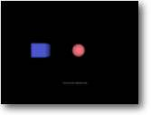

Collision Detection Aim: To detect a collision between 2 objects
|
 |
In this example I shall be using 2 ready-made entity objects, a Sphere and a Box.
Hopefully The program will display a message once the sphere comes into contact with the box. Run the program first to fully understand what is happening before delving into the sourcecode below.
| Graphics3D 800,600 Const CUBE_COL=1 Const SPHERE_COL=2 SetBuffer BackBuffer() camera=CreateCamera() CameraViewport camera,0,0,800,600 PositionEntity camera,0,0,-5 light=CreatLight() cube=CreateCube() PositionEntity cube,-5,0,5 EntityColor cube,70,80,190 EntityType cube,CUBE_COL sphere=CreateSphere(12) PositionEntity sphere,5,0,5 EntityColor sphere,170,80,90 EntityType sphere,SPHERE_COL Collisions SPHERE_COL,CUBE_COL,3,1 While Not KeyHit(1) MoveEntity sphere,-0.02,0,0 UpdateWorld RenderWorld If EntityCollided(sphere,CUBE_COL) Then Text 370,80,"Collided !!!" EndIf Text 335,500,"Collision Detection" Flip Wend End |
Being able to check for collisions is perhaps the most major part of any game. After all, without collision detection what's to stop Mario falling through the floor, or the bullets from Max Payne's gun doing its damage. We need it - whether we want it or not !.
If you look carefully through the above example you will notice quite a few new commands. Let's briefly run through the entire program before we look at these.
Firstly we create 2 objects - a Cube and a Sphere.., then we setup the collision so that B3D will check these objects every time the UPDATEWORLD instruction is called.
Slowly we move the Sphere towards the Cube, until they collide.. after that, we print up the collision message on the screen to signal that we have collided.
So what do these new instructions do:
|
Const CUBE_COL=1 Const SPHERE_COL=2 |
Ok, its not an instruction, but just something I've strung together for this example. When programming always try and make things as easy as possible - It will certainly help when it comes to debugging. (working out any problems)
The Collision instructions we have to setup rely on variables, but rather than just using numbers - I'll use the CONSTANT variables I've setup to represent them.
So in the above two lines, I can use the variable names CUBE_COL every time I want to use a 1 - and SPHERE_COL instead of 2. Although of course I could just use the numbers with the instructions, as you'll see it will help us out.
| EntityType cube,CUBE_COL |
After we've setup the basic entity object, we need to setup a collision variable for it. We do this by assigning a number to the entity, As you can see to do this we use the ENTITYTYPE command. Here I've set the entity cube to have a value of 1. (remember the CONST variable is set to 1)
| EntityType sphere,SPHERE_COL |
As before, we setup the sphere collision variable to have a value of 2.
AN IMPORTANT NOTE TO REMEMBER !
Every entity DOES NOT have to have a separate collision variable
number. For example say we created a 3d maze game, that had 10 objects for the
sides of the maze. We would want to check if we have collided with a wall, it wouldn't
matter which wall.. just a wall. So every wall object(entity) would have the
same collision variable.
I would use the code:
Const WALL=1
EntityType wall1,WALL
EntityType wall2,WALL... etc
Later on when we check for a collision we would just say, is there a collision with the wall ?. Nice and Easy isnt it ?
| Collisions SPHERE_COL,CUBE_COL,3,1 |
Now the fun begins, this is the main instruction that informs B3D which objects to check for collisions and what action it should take.
The first part of the line "Collisions SPHERE_COL,CUBE_COL,3,1", is saying that we want a check to take place between the collision markers 1 and 2. (Remember the Sphere is 1 and the Cube is 2)
If we had more entities with the same collision marker value, then of course these too would be included.
"Collisions SPHERE_COL,CUBE_COL,3,1" - The first value (3
), represents the type of collision that we want B3D to perform, in this case we are using mode '3' - which is a Sphere-to-Box collision.B3D has 3 different types of collisions we can perform, these are:
|
1 = Sphere-to-Sphere 2 = Sphere-to-Polygon 3 = Sphere-to-Box |
Now we come to the last value, "Collisions SPHERE_COL,CUBE_COL,3,1". This is the response value, it signals what B3D should do when a collision has taken place. I used the value 1 which is used for a dead stop. (when it collides with something, don't let it move any closer to it)
As before there are 3 mode types we can use:
|
1 = Stop 2 = Slide1 - Full sliding collision 3 = Slide2 - Takes into consideration the angle of slopes |
Even though in my program I am moving the sphere into the box with the MOVEENTITY command, when it collides (because I've used the STOP mode).. the entity will NOT move through it.
We have one more command to look at, that's the collision check instruction itself "EntityCollided"
.|
If
EntityCollided(sphere,CUBE_COL) then Text 370,80,"Collided !!!" EndIf |
As you can can probably guess, this instruction (imbedded in an IF statement) - is checking the entity SPHERE for a collision with the collision marker 1 (the cube).
If it has collided then print the message to signal a collision !.
Ok, we have now run through the entire program - but did it make much sense to you ?, To begin with I couldn't grasp it at all !. The best way to understand the various collision instructions is to experiment yourself with the different mode settings. Eventually (if you haven't understood fully by now).. you will realize just how easy and powerful they can be.
Tutorial 8 - Vertexes